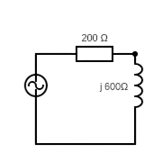
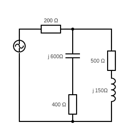

A impedância (\(Z\)) é a grandeza que relaciona a tensão e a corrente em um circuito de corrente alternada (AC),
da mesma forma que a resistência relaciona tensão e corrente em corrente contínua (DC).
Ela indica o quanto o circuito se opõe à passagem da corrente alternada e é representada por um número complexo:
Onde:
No resistor, a tensão e a corrente estão sempre em fase, ou seja, seus picos ocorrem ao mesmo tempo. O resistor não armazena energia — ele apenas a dissipa em forma de calor. Portanto, sua impedância é puramente real.
\[\begin{aligned}{ v_r(t) = V_p\cdot\sin(2πft + \theta), [V]\\ i_r(t) = I_p\cdot\sin(2πft + \theta), [A] }\end{aligned}\\ V_r = I_r \cdot R \implies Z_r = R \]O capacitor armazena energia no campo elétrico entre suas placas. A corrente se adianta em 90° em relação à tensão, pois o capacitor reage mais rápido às mudanças de tensão. Sua impedância é inversamente proporcional à frequência: quanto maior a frequência, menor a oposição à corrente.
\[\begin{aligned}{ v_c(t) = V_p\cdot\sin(2πft + \theta), [V]\\ i_c(t) = I_p\cdot\sin(2πft + \theta + 90°), [A] }\end{aligned}\\ V_c = I_c \cdot {1 \over j\omega C} \implies Z_c = {1 \over j\omega C} = -jX_c \]Onde \(X_c = {1 \over j\omega C}\) é a reatância capacitiva.
O indutor armazena energia em seu campo magnético e se opõe às variações da corrente. Nesse caso, a tensão se adianta em 90° em relação à corrente. Sua impedância aumenta proporcionalmente à frequência.
\[\begin{aligned}{ v_l(t) = V_p\cdot\sin(2πft + \theta), [V]\\ i_l(t) = I_p\cdot\sin(2πft + \theta - 90°), [A] }\end{aligned}\\ V_l = I_l \cdot j\omega L \implies Z_l = j\omega L = jX_l \]Onde \(X_l = {1 \over j\omega L}\) é a reatância indutiva.
É uma técnica de análise de circuitos CA onde tensões e correntes senoidais são transformadas em números complexos chamados fasores e onde resistores, capacitores e indutores são transformados em números complexos denominados impedâncias.
A impedância total de um circuito depende de como os elementos estão conectados:
Quando resistores, capacitores e indutores estão em série, a corrente que passa por todos é a mesma, e a tensão total é a soma das tensões nos elementos. Portanto, a impedância total é a soma algébrica das impedâncias individuais:
\[ Z_{eq} = Z_1 + Z_2 + \dots + Z_n \]
Exemplo: um resistor R e um capacitor C em série:
\[
Z_1 = R, Z2 = {1 \over j\omega C}\\
Z_{eq} = R + {1 \over j\omega C}
\]
Quando os elementos estão em paralelo, todos compartilham a mesma tensão, mas a corrente se divide. A impedância total é dada pela soma das condutâncias (inverso da impedância):
\[\def\1over#1{{1 \over {#1}}} \1over{Z_{eq}} = \1over{Z_1} + \1over{Z_2} + \dots + \1over{Z_n} \]
Exemplo: um resistor R e um capacitor C em paralelo:
\[\def\1over#1{{1 \over {#1}}}
\1over{Z_{eq}} = \1over R + j\omega C\\
Z_{eq} = \1over{\1over{R} + j\omega C}
\]
Após calcular \(Z_{eq}\) (em forma retangular: \(R + jX\)), muitas vezes é útil converter para a forma polar:
\(|Zeq| = \sqrt{R^2 + X^2}\), onde |Zeq| é o módulo da impedância e
\(\theta = \arctan(\frac X R)\), \(\theta\) é o ângulo de defasagem entre tensão e corrente.
Exemplo 1

Zeq = 100 + j200 Ω => Zeq = 223,1 < 63,4º
It = Vf / Zeq = 12 < 0º / 223,1 < 63,4º = 53,8 < -63,4º mA
Vr = It · R = (53,8e-3 < -63,4º) · (100 < 0º) = 5,38 < -63,4º V
VL = It · XL = (53,8e-3 < -63,4º) · (200 < 90º) = 10,76 < 26,6º V
Exemplo 2 (com associação série/paralelo)

Z1 = 400 - j600 Ω => 721,1 < -56,31º Ω
Z2 = 500 + j150 Ω => 522 < 16,7º Ω
Z1 // Z2 = 364,4 - j84,13 Ω => 374 < -13º Ω (aprox)
Zeq = 200 + (Z1 // Z2) = 564,4 - j84,13 Ω => 570,6 < -8,48º Ω
It = Vf / Zeq = (35,36 < 0º) / (570,6 < -8,48º) = 61,97e-3 < 8,48º A
VAB = It · (Z1 // Z2) = 23,18 < -4,52º V
I1 = VAB / Z1 = 32,15e-3 < 51,79º A
I2 = VAB / Z2 = 44,3e-3 < 21,22º A